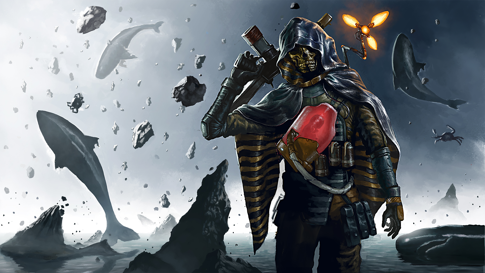

Игровой процесс
Death Stranding описывалась как экшн-игра с открытым миром. В основе геймплея лежит доставка посылок из одной точки мира в другую: управляя героем Сэмом, игрок должен выбрать заказ через терминал доставки одного из поселений, погрузить посылку на спину героя и добраться с ней до адресата — в среднем такой пеший поход занимает от пяти до пятнадцати минут. Сам акт путешествия задумывался испытанием и источником эмоций для игрока, наподобие туристического похода. Каждая успешная доставка оценивается по ряду параметров, и игрок получает от неигровых персонажей особые очки — «лайки», наподобие функции «Нравится» в социальных сетях; игрок получает больше «лайков», если посылка не будет повреждена при доставке, или, например, доставит больше предметов, чем нужно для минимально успешной доставки. Скопив достаточно лайков по той или другой из нескольких категорий оценки, отмечаемых на специальной диаграмме-звезде, игровой персонаж может стать, например, более выносливым или способным переносить больше груза. Открытый мир игры состоит из двух больших раздельных регионов; управляемый игроком персонаж начинает игру на крайнем востоке и двигается на запад, открывая и подключая к сети новые поселения.
В походе между поселениями Сэм должен нести с собой не только ценные посылки, но и припасы, необходимые в походе — оружие, лестницы, тросы, даже сменную обувь на случай, если износятся ботинки у него на ногах. Пересечённая местность заставляет тщательно планировать маршрут: персонаж со временем устаёт, и игрок также должен следить за распределением груза и равновесием персонажа. При большой нагрузке герой начинает крениться в ту или иную сторону, и игрок должен исправлять его положение с помощью кнопок-триггеров геймпада. Подъём по скалам труден, а спуск тем более — если персонаж упадёт, он может рассыпать и повредить ценный груз. Специальный сканер позволяет анализировать местность поблизости, подсвечивая цветными значками возможные опасности — например, камни, на которых легко споткнуться, или глубокие ручьи, где персонажа может унести течением. «Темпоральный дождь», также превращающийся в горах в «темпоральный снег», постепенно разрушает и груз на спине персонажа, и любые построенные игроком объекты; размещая грузы и припасы на спине, игрок должен учитывать, что находящиеся сверху ящики пострадают от темпорального дождя в первую очередь. Игрок должен следить и за состоянием младенца ББ — одновременно спутника и элемента снаряжения героя: в состоянии стресса ББ начинает плакать и даже может потерять сознание, и игрок должен отцеплять и укачивать его с помощью контроллера.
Помимо пеших походов, игрок также может находить или строить в поселениях транспортные средства — мотоциклы и грузовики; эта техника работает на электродвигателях, и игрок должен следить за остатком заряда батареи и исправностью машины. Игрок может строить в мире игры различные конструкции, облегчающие передвижение по миру — лестницы, укрытия от дождя, мосты через реки и тому подобное. Все эти сооружения постепенно разрушаются под темпоральным дождём и в конечном счёте исчезнут, если их не ремонтировать. Большие сооружения, такие как мосты, требуют от игрока искать в мире игры и использовать для строительства особые ресурсы наподобие металлов и керамики; многие сооружения можно дополнительно улучшить после строительства — это замедлит их разрушение под дождём и придаст новые функции, например, возможность воспроизведения музыки по выбору игрока. С помощью героини Фрэджайл игровой персонаж может мгновенно телепортироваться в любое поселение из тех, где он уже побывал, даже в другом регионе, и также включая построенные игроком убежища — однако персонаж не может переносить таким образом посылки и экипировку: они остаются в том поселении или убежище, откуда было совершено мгновенное перемещение.
Death Stranding содержит многопользовательские элементы, хотя и не требует от игрока постоянного подключения к сети и не содержит кооперативной или соревновательной игры в традиционном смысле — нельзя встретить в мире игры других игроков. Тем не менее, игрок может найти в мире игры построенные другими игроками сооружения, транспортные средства, брошенные грузы и припасы; игроки могут оставлять друг для друга предупреждающие знаки и «одобрять» чужие сооружения и знаки с помощью «лайков».
Одной из опасностей, угрожающей герою, являются «МУЛы» — бывшие курьеры, страдающие иррациональной зависимостью от самого процесса доставки; они нападают на действующих курьеров и отнимают у них посылки, чтобы доставить их самостоятельно. МУЛы вооружены нелетальным оружием и стремятся только отнять у игрового персонажа ценный груз, а не убить его; впрочем, в игре появляются и «террористы», отличающиеся от МУЛов наличием огнестрельного оружия. В других местах игры Сэму противостоят чудовищные «Твари» — чуждые фантастические существа из другого мира, появляющиеся только во время дождя. Твари обычно невидимы, но проявляют себя различными образами — как отпечатки человеческих рук в грязи; туманные фигуры, привязанные к определённому месту пуповиной; чёрные фигуры, поднимающиеся из смоляных луж, или чудовищные морские существа. В начале игры Твари неуязвимы для игрока, и их можно только избегать, однако в ходе игры Сэм получает оружие против этих созданий. При столкновении с Тварями включается сканер-одрадек на плече Сэма — по его направлению, движению и цвету можно определить, где находятся ближайшие Твари. Сэм может задержать дыхание, чтобы Твари его не заметили, но только на ограниченное время. Обычные человекообразные Твари не убивают персонажа, но стремятся схватить и отнести его к огромной Твари — мини-боссу. Если игрок проиграет сражение с этой Тварью, персонаж погибнет, и произойдёт «выплеск пустоты» — сокрушительный взрыв, оставляющий в мире игры огромный кратер. Эти кратеры остаются в мире игры и после того, как игровой персонаж вернётся к жизни — они меняют рельеф местности и надолго делают область игрового мира непроходимой, хотя и исчезают со временем. В случае смерти героя действие игры не возвращается к точке сохранения, как во многих других играх; вместо этого игровой персонаж попадает в «Шов» (англ. Seam) — своеобразное «чистилище» — мир, опрокинутый вверх ногами и погружённый под воду; игрок может обследовать это пространство с видом от первого лица, собирая различные предметы.
 Назад к содержаниюСюжет
Окружение
Действие Death Stranding происходит в постапокалиптическом будущем; много лет назад США и весь остальной мир были разрушены катастрофой, известной как «Выход Смерти» . Эта катастрофа связана с существованием жизни после смерти: каждый человек, помимо смертного тела («Ха»), обладает и бессмертной душой («Ка»). При жизни они связаны, но после смерти тела, душа попадает в индивидуальный загробный мир — Берег (англ. Beach), из которого может двинуться в неведомые миры за ним. У каждого человека свой Берег, хотя в случае гибели множества людей одновременно, как на войне, они могут оказаться и на общем Берегу. Заполонившие Землю после Выхода Смерти Твари — это существа из загробного мира, духи мёртвых. Твари — зеркальные отражения людей, состоящие из антиматерии; контакт крупной Твари с человеком приводит к мгновенной аннигиляции — «выплеску пустоты», взрыву, способному уничтожить целый город и оставить после себя кратер с отпечатком огромной ладони внутри. После вторжения Тварей большинство старых городов Америки были уничтожены в подобных Выплесках. С Выходом Смерти каждый труп стал источником опасности — после смерти человеческое тело быстро «некротизируется» (в течение 48 часов) и превращается в очередную Тварь, поэтому специальные бригады должны вывозить тела умерших прочь от населённых пунктов и сжигать до того, как произойдёт превращение.
Вместе с Выходом Смерти на Земле появились или проявили себя и другие предметы и явления, как «хиралий» (англ. chiralium) — особая материя, подобная тёмной материи, существовавшая со времен Большого взрыва; она не подчиняется обычному ходу времени и меняет течение времени вокруг себя. «Темпоральный дождь» , связанный с хиралием, многократно ускоряет ход времени для всего, на что попадает, будь то люди или постройки, заставляя их стареть и разрушаться на глазах. Этот дождь идёт только в определённых местах, и о начале дождя оповещает перевёрнутая радуга. После Выхода Смерти некоторые люди приобрели сверхъестественные способности: так, «возвращенцами» называются те, чьи души способны после смерти воссоединиться с собственными телами, воскреснув во плоти. Особое состояние, известное как ДУМ, отличает людей, связанных с загробным миром. Сэм, главный герой игры, одновременно является возвращенцем и имеет ДУМ, хотя и низкого второго уровня — он не может видеть Тварей самостоятельно, только чувствовать их присутствие. Героиня Фрэджайл, как носительница ДУМ более высокого уровня, способна и видеть Тварей, и мгновенно телепортироваться из одного места в другое, а антагонист Хиггс — вызывать Тварей и управлять ими.
После Выхода Смерти Соединённые Штаты Америки перестали существовать как государство: люди живут в нескольких безопасных городах-«узлах» и разбросанных в глуши бункерах «выживальщиков». Только курьеры осмеливаются выходить за стены городов и переносить ценные грузы из одного поселения в другое — без этого и города-узлы, и бункеры выживальщиков обречены на вымирание. Остатки старого правительства на востоке страны сформировали федерацию под названием UCA; подчиненная UCA курьерская компания «Бриджес» , на которую работает Сэм, стремится восстановить единство страны. Люди в центральной и западной части материка не доверяют UCA, а террористы из организации Homo Demens открыто выступают против неё и «Бриджес». Как «Бриджес», так и террористы из Homo Demens пользуются технологией, которые «Бриджес» называет ББ — «Бридж-Бэби» : ББ представляют собой человеческие эмбрионы в искусственных матках; к ним относятся как к ценному оборудованию, а не как к живым детям. В то время как для большинства людей Твари невидимы, ББ видят их и могут взаимодействовать с особым сканером-«одрадеком», сообщающим человеку, где находятся Твари.
Синопсис
В начале игры Сэм (Норман Ридус) помогает «отделу утилизации трупов» перевезти человеческий труп в крематорий за городом Центральный узел. В пути на грузовик нападают Твари, которыми управляет некий неизвестный человек в маске; гигантская Тварь поглощает спутника Сэма, за чем следует выплеск пустоты — грандиозный взрыв, в котором погибает и Сэм, и весь город. После возвращения с того света Сэм оказывается в центре «Бриджес» в другом городе, Столичном узле; он встречается с коронером «Бриджес» Дедмэном (Гильермо дель Торо), директором Дайхардмэном (Ти Джэй Дженкенс) и своей приёмной матерью — президентом UCA Бриджет Стрэнд (Линдси Вагнер). Бриджет умирает от рака, но оставляет Сэму завещание: направиться на запад, найти дочь Амелию и воссоединить Америку. Сэм относит тело Бриджет в крематорий вместе с ББ-28; обнаружив, что младенец-детектор жив, исправен и в состоянии обнаруживать Тварей, Сэм оставляет его себе.
За два года до начала действия игры Амелия отправилась на запад вместе с большой экспедицией «Бриджес», выстроив по всему континенту хиральную сеть центров и терминалов, однако подключить их друг к другу не удалось, экспедиция была рассеяна и погибла, а Амелия была схвачена террористами из Homo Demens и не может покинуть город Краевой узел на западном побережье материка. Она, тем не менее, выходит на связь, появляясь в виде бестелесной «хиралиграммы», а также как видение в снах Сэма. Амелия и «Бриджес» хотят, чтобы Сэм прошёл тем же маршрутом и закончил начатое Амелией — это и было завещание Бриджет Стрэнд; Амелия должна стать новым президентом. Особое устройство «кьюпид» позволит подключать ранее посещённые Амелией поселения к общей сети. Сэм неохотно уступает давлению и вместе с ББ отправляется на запад.
В городе Портовый узел Сэм вновь сталкивается с человеком в маске — это лидер Homo Demens Хиггс (Трой Бейкер), называющий себя «частицей Бога»; на этот раз Сэму удаётся победить вызванную Хиггсом гигантскую Тварь. В пути на запад Сэму помогает Фрэджайл (Леа Сейду), хозяйка крупнейшей местной курьерской компании. Когда-то Фрэджайл и Хиггс работали вместе, но Хиггс предал свою напарницу, подкладывая миниатюрные термоядерные бомбы в грузы, которые она переносила — в результате был уничтожен город Срединный узел и едва не погиб Южный узел. Хиггс пытается провернуть свой трюк с бомбой и с Сэмом, но тому тоже удается выбросить бомбу в безопасное место. В результате загадочного хирального шторма Сэм также оказывается в потустороннем мире — на поле боя, напоминающем Первую мировую войну. Здесь на него охотится загадочный солдат Клиффорд (Мадс Миккельсен), также часто появляющийся в видениях, возникающих при подключении ББ — он одержим желанием вернуть ББ себе. Позже Сэм знакомится ещё с одной сотрудницей «Бриджес» — женщиной-инженером Малинген по прозвищу Мама (Маргарет Куэлли); Мама связана призрачной пуповиной с маленькой Тварью — её ребёнком, погибшим во время родов. Мама и её сестра-близнец Локни должны усовершенствовать кьюпид, сделав это устройство безопасным; для этого Сэму приходится рассечь пуповину, удерживающую ребёнка Мамы в мире людей, и доставить Маму к Локни в далёкий Горный узел. Мама умирает, но её душа-«ка» поселяется в теле Локни — таким образом, сёстры сосуществуют в одной телесной оболочке.
Дедмэн временно забирает ББ, которого Сэм начинает называть Лу — это делает путешествия по горам более опасными, так как Сэм не может видеть Тварей, и заканчивается очередным столкновением с Клиффордом, на этот раз в мире, напоминающем о Второй мировой. Очередным помощником Сэма становится Хартмэн (Николас Виндинг Рефн) — учёный-возвращенец, запертый в своей горной лаборатории; Хартмэн каждые 21 минуту умирает и возвращается к жизни, пытаясь найти на Берегу погибших жену и дочь. Из разговора с ним выясняется, почему Сэм назвал ББ Лу: так звали его неродившегося ребёнка. Изучая доставленные ему Сэмом образцы — в том числе нетленное тело Мамы и пуповину Бриджет Стрэнд — Хартмэн заявляет, что Выход Смерти может случиться снова, и что покойная Бриджет Стрэнд могла быть «фактором вымирания» — таким же, какие вызывали пять массовых вымираний миллионы лет назад; более того, таким же «фактором вымирания» может быть и Амелия.
Сэм добирается до Амелии и Хиггса в Краевом узле — завершающей точке пути на западном побережье; теперь, когда хиральная сеть достроена, и все поселения Америки связаны друг с другом, Хиггс хочет с помощью Амелии связать друг с другом и загробные берега людей и вызвать шестое, окончательное вымирание — Последний Выход. Сэму удаётся победить гигантскую Тварь, вызванную Хиггсом; с помощью Фрэджайл он отправляется на Берег Амелии, где скрывается Хиггс, и одолеть и его. Тем не менее, на Берегу появляются Бриджет Стрэнд, директор «Бриджес» Дайхардмэн и Клиффорд, требующий вернуть ему ББ — Амелия возвращает Сэма в мир людей. Сэму приходится вновь посетить загробный мир Клиффорда, на этот раз напоминающий войну во Вьетнаме, и победить Клиффорда в третий и последний раз. Во время разговора с Сэмом, Клиффорд больше не ведёт себя с ним, как с противником, а когда Сэм решает вернуть ему ББ, он отдаёт его обратно. Сэм вновь посещает Берег Амелии, где сталкивается с Бриджет и узнает, что Бриджет и Амелия — не мать и дочь, но одна и та же сущность, действительно «фактор вымирания»: стареющая «Бриджет» была физическим телом, вечно молодая «Амелия» — душой, существующей на потустороннем Берегу. Бриджет-Амелия готова запустить обещанный Последний Выход; Сэм обнимает её и убеждает отказаться от своих планов и отсрочить апокалипсис.
Сотрудникам «Бриджес», использовав все свои способности, удаётся вернуть Сэма в мир людей; новым президентом UCA становится Дайхардмэн. Сэм покидает организацию, забрав у Дедмэна капсулу с Лу, умершим по истечении срока эксплуатации. По приказу Дайхардмэна, он вновь посещает крематорий, но не может заставить себя сжечь младенца. Снова и снова пытаясь его включить, Сэм опять испытывает видения, на этот раз переживая метафизическую реконструкцию дня смерти Клиффорда. Как оказывается, он — отец Сэма, и «ББ», которого разыскивал Клиффорд — не Лу, но сам Сэм. Сэм был первым ББ в истории этой технологии; Клиффорд с помощью Дайхардмэна выкрал младенца из лаборатории, но не смог сбежать. Руками Дайхардмэна, Бриджет Стрэнд застрелила Клиффорда, но задела младенца. Сэм попал на Берег, где его подобрала Амелия и вернула назад в мир живых, а Бриджет вырастила как приёмного сына. Перед моментом гибели Клиффорда воспоминание прерывается и герои говорят в последний раз. Сэм узнаёт, кто всё это время был его отцом, а сам Унгер наконец обретает покой.
Вернувшись к реальности, Сэм решает ослушаться приказа и вскрывает капсулу, пытаясь вернуть Лу к жизни, однако безуспешно. Минутой позже младенец оживает и смотрит на Сэма, удерживая в руке Кипу — Бриджит-Амелия отдала ему последний предмет, связывавший её с Сэмом и отправила Лу с Берега в реальный мир, сделав Возвращенцем. Вместе с Лу Сэм покидает крематорий. Они идут под дождём, который больше не имеет темпоральных свойств; пробивается солнечный свет, и видна нормальная, не изменённая катаклизмом радуга: Выход Смерти завершился. В сцене после титров имя «Лу» расшифровывается как «Луиза» — ББ с самого начала был девочкой.
Разработка
Хидэо Кодзима, руководитель Kojima Productions, более известен как создатель серии компьютерных игр Metal Gear. Летом 2015 года после затяжного корпоративного конфликта с японской компанией Konami студия Kojima Productions, бывшая на то время лишь её подразделением, была закрыта и воссоздана в качестве независимой студии по разработке компьютерных игр в декабре того же года. В конце 2015 года, до анонса игры, было сообщено, что ожидаемый первый проект студии должен быть выпущен сначала на PlayStation 4, а затем, после окончания некоторого периода «эксклюзивности», и на ПК. Игра использует игровой движок Decima Engine, разработанный голландской компанией Guerrilla Games; при этом, по словам руководителя Guerrilla Games Германа Хульста, Kojima Productions должна была создать в Амстердаме подразделение специально для сотрудничества с его компанией.
Игра Death Stranding является экшн-игрой, как и Metal Gear Solid, и не должна рассматриваться как замена Silent Hills, отменённого проекта Кодзимы времён его работы в Konami. По поводу жанра игры Хидэо Кодзима заявил, что это будет некий экшн с новыми элементами и привнесениями. Он провёл параллель со своей же ранней игрой Metal Gear 1987 года, которая ныне классифицируется как стелс-игра, однако во время выхода её называли экшеном, так как жанра «стелс» ещё не существовало. По словам Кодзимы, он начал создание игры с разработки оригинальной игровой механики — его замысел поначалу не поняли даже собственные сотрудники Kojima Productions, когда Кодзима изложил им свою идею. 24 января 2019 Kojima Productions зарегистрировала две торговые марки — Social Strand System и Strand Game.
Название игры было официально озвучено на конференции Sony на выставке E3 2016 в июне 2016 года. Тогда же был продемонстрирован «тизер» игры — наполненный тревожными, но завораживающими образами и скрытыми деталями ролик демонстрировал персонажа с внешностью Нормана Ридуса на берегу у моря[40]; именно этот персонаж является главным героем игры, управляемым игроком. 2 декабря 2016 года на церемонии награждения The Game Awards 2016 был показан второй тизер, где фигурируют персонажи, смоделированные по образу Гильермо Дель Торо и Мадса Миккельсена. Персонаж Миккельсена, по-видимому, является антагонистом, наделённым сверхъестественными способностями. Миккельсен в интервью IGN Japan отмечал, что его персонаж не является злодеем в полном смысле этого слова: в играх Кодзимы нет «плохих парней» или «хороших парней», образы героев в них двойственны и совмещают в себе хорошие и дурные черты. Продолжительный трейлер, показанный год спустя на церемонии The Game Awards 2017 был выполнен в духе НФ-хоррора и показывал персонажа Ридуса в составе группы людей в защитных костюмах, подвергающейся нападению невидимого чудовища. Согласно интервью Кодзимы сайту IGN, для разработки игры очень болезненной оказалась забастовка актёров озвучивания, организованная американским профсоюзом SAG-AFTRA ; до её окончания в октябре 2017 года студия Kojima Productions не могла заниматься записью озвучивания или сцен по технологии захвата движения с участием актёров — членов профсоюза, хотя исполнители главных ролей — Ридус и Миккельсен — и проявляли интерес к игре. Студия потратила освободившееся время на работу с движком Decima Engine, дорабатывая его под нужды игры.
Само название Death Stranding многозначно и может быть переведено как «смертельное выбрасывание на берег» или «смертельное привязывание» — с одной стороны, по словам Кодзимы, оно посвящено чему-то инопланетному, «выброшенному» в наш мир подобно тому, как на берег моря выбрасываются киты и дельфины ; с другой стороны, слово strand используется в психологии в контексте связей и привязанностей — поэтому в трейлерах игры появляются образы кабелей и пуповин, связывающих персонажей друг с другом. Кодзима объяснил одну из главных тем игры, ссылаясь на некий рассказ Кобо Абэ, в котором говорится, что первым инструментом, созданным человеком, была палка — то, с помощью чего человек удерживает на расстоянии от себя «плохие вещи», а вторым инструментом была верёвка — для удержания «хороших вещей» рядом с собой. Кодзима сравнил основные «инструменты» взаимодействия с окружающим миром в экшн-игре — удары и стрельбу — с «палкой», и сказал, что Death Stranding должна предоставить игрокам и «верёвку» — нечто, что позволит связывать людей друг с другом.
Назад к содержаниюМузыка в игре
Основным композитором и аудиорежиссёром Death Stranding выступил Людвиг Форсселл, работавший также над саундтреком предыдущей игры Хидэо Кодзимы Metal Gear Solid V: The Phantom Pain. В работе над музыкальным сопровождением игры Форсселлу помогал другой композитор, Джоэль Корелиц. В то время как во многих ключевых сюжетных сценах игры звучит музыка других исполнителей и групп, музыка Форсселла сопровождает и иллюстрирует геймплей. Форсселл описывал для Корелица планируемый саундтрек как «обескураживающий, агрессивный, неослабевающий… современный, эпический, кинематографический звук», при этом избегая тех инструментов, которые обычно ассоциируются с подобной музыкой — чтобы звучать свежо и необычно. Корелиц подготовил для Sony 10 пробных фрагментов — чтобы добиться гулкого звука, он стучал по разным предметам вроде ящиков и пластмассовых баков и семплировал получившиеся записи — «странный процесс для странной игры». В процессе работы Форсселл, Корелиц и звукотехники Sony даже посетили магазин строительных товаров Home Depot и скупили там множество разных предметов, из которых, на их взгляд, удавалось извлечь интересные звуки. Они также пытались модифицировать звук предоставленного им фортепиано, подкладывая под струны шурупы и игральные карты, ударяя по клавишам резиновой киянкой или садовыми граблями.
В трейлерах Death Stranding были использованы треки исландской группы Low Roar. Песня «I’ll Keep Coming» звучала в дебютном трейлере игры, показанном на конференции E3 2016. Другая песня группы, «Easy Way Out» была использована в тизер-трейлере игры на выставке PlayStation Experience, 3 декабря 2016 года. В феврале 2017 года лейблом Mondo Tees LLC при поддержке Kojima Productions ограниченным тиражом был выпущен 12-дюймовый виниловый сингл, содержащий вышеупомянутые песни. Это был самый первый сопутствующий товар, выпущенный для будущей игры.
Назад к содержаниюОтзывы
Игра получила преимущественно положительные отзывы критиков, на агрегаторе Metacritic версия для PS4 получила рейтинг 82/100 на основе 111 рецензий, и 86/100 для версии на PC. Издание Director’s Cut на агрегаторе Metacritic получила 85/100 на основе 66 рецензий для PlayStation 5, и 84/100 на основе 6 рецензий для PC. Вместе с тем отзывы критиков разнились от очень отрицательных до очень положительных, некоторые хвалили игру за новые концепции, внешний вид, графику и озвучивание персонажей, другие — критиковали за медленный, раздражительный и скучный процесс.
Обозреватель IGN Тристан Огилви писал, что ответить на вопрос «что за игра Death Stranding», сложно; по его мнению, разработчики из Kojima Productions приложили огромные усилия, чтобы создать игру, но точно такие же усилия ожидаются и от игрока: хотя в игре есть и изобретательная фантастика, и захватывающие дух пейзажи, практически все, чем предлагается заниматься игроку раз за разом — «переносить предмет Х из точки А в точку Б», как в сюжетных, так и в побочных заданиях; эта переноска осложняется затруднительным управлением и менеджментом груза. По словам Огилви, игра — подобно собственному протагонисту — «спотыкается», не в силах сохранить равновесие между реализмом и эскапизмом; хотя какие-то части Death Stranding обозревателю и понравились, полюбить он её не смог.
Денис Павлушкин в обзоре от «Игромании» назвал игру «самым дорогим пранком в истории игровой индустрии» — смелым экспериментом и авторским высказыванием, но в то же время «проектом далеко не для всех». По его словам, хотя геймплейные механики Death Stranding крайне необычны для игры-блокбастера, она не вознаграждает игрока за потраченное время и даже активно порицает исследование мира, так что основной причиной играть в неё только сам умиротворяющий процесс похода, «чистейшая логистика». Сюжет игры Павлушкин охарактеризовал как набор красивых сцен, не складывающийся в цельную картинку и попросту разваливающийся к финалу.
Старейшее японское игровое издание Famitsu присудило высшую оценку игре — 40/40 (оценка формируется на основе рецензий четырёх сотрудников издания); таким образом Death Stranding стала 26-й игрой, получившей высшую оценку за всю историю издания с 1986 года.
Продажи
На дебютной неделе Death Stranding стала самой продаваемой игрой на физических носителях в Японии, а Famitsu сообщила, что игра была продана тиражом 185 909 копий , что сделало её самым успешным дебютом новой интеллектуальной собственности в Японии для восьмого поколения игровых консолей, обогнав предыдущего рекордсмена Judgment. Death Stranding оставалась в топ-30 самых продаваемых игр Famitsu в течение пяти недель до 15 декабря, достигнув более 253 000 проданных физических копий на тот момент. К марту 2020 года продажи игры в Японии достигли 262 827 физических копий и 136 279 цифровых копий, что составляет в общей сложности 399 106 продаж в Японии.
В Великобритании игра дебютировала на втором месте в чарте продаж на физических носителях, уступив Call of Duty: Modern Warfare (2019). Это второй по величине эксклюзивный дебют для PlayStation в 2019 году, уступив лишь "Days Gone". По данным Media Create, Death Stranding также дебютировала на первом месте в чарте продаж на физических носителях как на Тайване, так и в Южной Корее. Игра также возглавила итальянский и французский чарты продаж. Она заняла второе место в чартах Швейцарии.
К апрелю 2020 года в PlayStation Network игра достигла в общей сложности 3 миллиона игроков, включая 390 000 активных пользователей каждый месяц. Согласно оценкам рейтинговой компании Nielsen Media Research на онлайн сервисе Steam за первый месяц у Death Stranding было продано 477 000 цифровых копий.
В мае 2020 года Кодзима заявил, что игра была продана достаточно, чтобы окупить затраты на разработку и получить прибыль, обеспечив финансирование следующего проекта Kojima Production.
В апреле 2021 года головная компания издателя игр 505 Games Digital Bros объявила в финансовом отчете, что на конец 2020 года релиз для ПК принес доход 23 миллиона евро, что делает Death Stranding самой кассовой игрой компании в 2020 году. В октябре 2021 года Digital Bros объявила, что релиз для ПК принес 31 миллион евро. К июлю 2021 года игра разошлась тиражом 5 миллионов копий по всему миру для платформ PS4 и ПК.
Награды
Игра была номинирована на The Game Awards 2019 в категории «Игра года» и нескольких других. Победила в категориях: «Лучшая режиссура», «Лучший саундтрек», «Лучшая актёрская игра» (Мадс Миккельсен в роли Клиффа).
Наследие
Весной 2020 года ряд комментаторов отмечал неожиданную актуальность сюжета и геймплея игры на фоне пандемии COVID-19, изоляции людей в собственных домах и возросшей роли курьеров, доставляющих еду и покупки. Ранее другая игра Кодзимы — Metal Gear Solid 2: Sons of Liberty (2001) — предвосхитила такие характерные для XXI века феномены, как фальшивые новости и эхо-камеры, так что и Death Stranding провоцировала заголовки наподобие «Хидео Кодзима снова предсказал будущее?». В интервью с Джеффом Кили Кодзима саркастически замечал, что если бы он мог предсказывать будущее, то сделал бы игру, которая продавалась бы получше.
На фоне страхов перед коронавирусом житель Китая разработал вдохновленный Death Stranding костюм, чтобы защитить своего ребёнка от COVID-19. В марте 2020 в Steam появилась пародийная игра Walking Simulator, действие которой происходит в мире, опустошённом после Третьей Мировой Войны, а геймплей напоминает Death Stranding.
Сиквел
Впервые о том, что продолжение игры находится в разработке, стало известно в мае 2022 года, когда Норман Ридус принял участие в интервью изданию Leo Edit, чтобы рассказать о своей работе над игрой. В беседе с Иларией Урбинати Ридус воскликнул: «Мы только что начали работу над второй частью». Позже в интервью он вспоминал о том, как «игра вышла и завоевала все эти награды, и это было грандиозно», а затем повторил, что команда разработчиков «только что приступила к работе над второй частью». В ответ на это автор и режиссёр игры Хидэо Кодзима опубликовал в Twitter серию фотографий, на которых в шутку бьёт Ридуса, со словами: «иди в свою комнату, друг мой»[149][150].
На ежегодной церемонии награждения The Game Awards 2022 был показан первый трейлер сиквела Death Stranding (название стилизовано как DS2 и уточнённое как рабочее), в котором были подтверждены актёры, ранее упомянутых в тизерных изображениях игры[151], а также Трой Бейкер, ранее игравший Хиггса в первой части[152].
Назад к содержанию